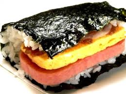
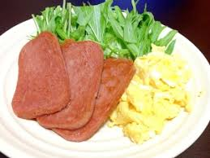

伊波くんも大好きポーク玉子

由来
ポークを薄切りしたものを焼き、これと卵料理を惣菜にするというのは、ごくありふれた食事風景
でした。これをそのまま食堂のメニューにしたものが「ポーク玉子」です。
ご飯と卵がフワッフワで、スパムの少ししょっぱめの肉々しさと絶妙にマッチ！ コレは……美味い！ 印象としてはおにぎりというより“おにぎらず”に近い気がします。
元祖“ポーたま”以外にも島豆腐の厚揚げ入り・あぶらみそ風味・エビタル等々、アレンジメニューも多く、全制覇したくなりますね！
レシピ

材料（2人分・4個）
| スパム |
|
5mmで4枚 |
| 卵 |
|
2個 |
| 焼き海苔 |
|
半切り4枚 |
| ご飯 |
|
約350g |
| 塩・胡椒 |
|
少々 |
| サラダ油 |
|
適量 |
- ボウルに卵を溶き、塩・こしょうを入れて混ぜる
- 玉子焼き用フライパンにサラダ油をひき、四角い卵焼きを作る
- 玉子焼きは4つに切り、スパムはキッチンペーパーで軽く油を切る
- 海苔の手前半分にご飯、玉子焼き、スパム、ご飯の順で重ね、ぐるりと巻く。巻いたら全体の形を整える
- 海苔の重なっている部分を下にし、少々置いておく。海苔が馴染んだら半分に切れば完成
有名な店
ポークたまごおにぎり本店
場所：沖縄国際通り牧志公設市場すぐ
系列店では、「北谷店」「空港1F店」がある。
MAIN MENU 牧志本店限定 定番のポーたま(250yen)の他に、牧志本店限定のメニューが存在する。以下が例である。
チキナー(290yen)
ナーベラ天と自家製油味噌ポークたまごおにぎり(390yen)
スパイシーにんじんしりしり(360yen)
魚フライタルタル島らっきょ(400yen)
ツナマヨゆでたまご(280yen)
リンク：http://porktamago.com/?page_id=61
いいね！